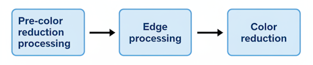

2. Loading Source Image / 元画像の読み込み
Load Source Image: Click this button to select the image you want to process (PNG or
JPG). The image will be displayed in the main area. You can zoom in/out using the slider (or mouse
wheel).
Load Source Image:
このボタンをクリックして、処理したい画像（PNGまたはJPG）を選択します。画像はメインエリアに表示されます。スライダー(またはマウスのホイール)を使って拡大/縮小が可能です。
Dot: "Pixel art style" illustrations will be processed (scaled down) to more closely resemble genuine pixel art.
The user should specify the desired width of the image in pixels, ranging from 1 to 16 (1 does nothing; images will be scaled
down to 1/specified value of their original size). The "Smart" option in the combo box will apply a clever process. "Center"
will use the center pixel, and "Avg" will use the average value.
Dot:
「ドット絵風」イラストを、本物のドット絵に近づける努力(縮小処理)をします。何ドット幅の絵であるかはユーザが1～16の範囲で指定してください(1は何もしません)。コンボボックスのSmartはなんかうまいことします。Centerは中央ドット採用、Avgは平均値採用します。
3. Palette Management / パレット管理
Set Palette Image: Click this button to load a palette image (PNG or JPG).
Unique colors will be extracted from the image (up to 1025 colors). You can create this image
yourself or obtain it from sources like LOSPEC.
Set Palette Image:
このボタンをクリックしてパレット画像（PNGまたはJPG）を読み込みます。画像からユニークな色が抽出されます(最大1024色)。この画像は、自分で作成するか、LOSPECなどから入手することができます。
Enable Color Deletion:To remove individual colors from the palette, check this
checkbox.
You can delete colors by clicking on the color chip.
Enable Color Deletion: パレットから個別の色を削除するには、このチェックボックスをオンにします。カラーチップをクリックすると削除できます。
Save the current palette: You can save the current palette as a palette image.
Save the current palette: 現在のパレットをパレット画像として保存できます。
Default Palette: We perform color reduction using RGB232, RGB322, RGB343, and RGB433
palettes.
Default Palette:
RGB232,RGB322,RGB343,RGB433のパレットを使用して減色を行います。
4. Pre-color reduction processing / 減色前処理
Enable Pre-processing: Check this to apply color adjustments (RGB, Brightness,
Contrast, etc.) to the source image before color reduction. This helps in tweaking the image to
better fit the palette.
Enable Pre-processing:
減色処理の前に、元画像に対して色調整（RGB、明るさ、コントラストなど）を適用するには、これをチェックします。パレットに合わせて画像を微調整するのに役立ちます。

6. Edge processing / エッジ処理
Apply effects to edges detected in the image to enhance outlines or add details.
画像内で検出されたエッジに対して効果を適用し、輪郭を強調したりディテールを追加したりします。
Force Edge (Alpha): Forces pixels with opacity within the specified range to be treated
as edges.
Force Edge (Alpha): 透明度が指定範囲内のピクセルを強制的にエッジとして処理します。
Outline Detection: Detect outlines. For pixels with an opacity greater than or equal to
Opacity Thr, they are treated as an outline if there are adjacent pixels with an opacity less than or
equal to Alpha Thr.
Outline Detection: アウトラインを検出します。透明度がOpacity Thr以上のピクセルに対して、透明度がAlpha
Thr以下のピクセルが存在する場合にアウトラインとして処理します。
Edge Algorithm: Select the edge detection algorithm
(Sobel, Prewitt, Roberts, Laplacian). You can adjust the threshold. In addition, you can adjust the
slider to prioritize "brightness" or "hue" in Hue Prio.
Edge Algorithm: エッジ検出アルゴリズム（Sobel、Prewitt、Roberts、Laplacian）を選択します。閾値を調整できます。また、Hue
Prioで"輝度"または"色相"を優先するように調整できます。
Edge Adjustments: Specify the processing content for dots identified as edges.
Edge Adjustments: エッジと判定されたドットに対する処理内容を指定します。
8. Disclaimer / 免責事項
This software is provided "as is", without warranty of any kind. The author is not liable for any
damages arising from its use.
本ソフトウェアは「現状のまま」提供され、いかなる保証もありません。著者は、本ソフトウェアの使用から生じるいかなる損害についても責任を負いません。
Note: This help page was written by Antigravity doing their best, so please forgive any
small mistakes.
Note: このヘルプページはAntigravityくんが頑張って書いてくれたんや、ちょっとぐらい間違ってても許したってな